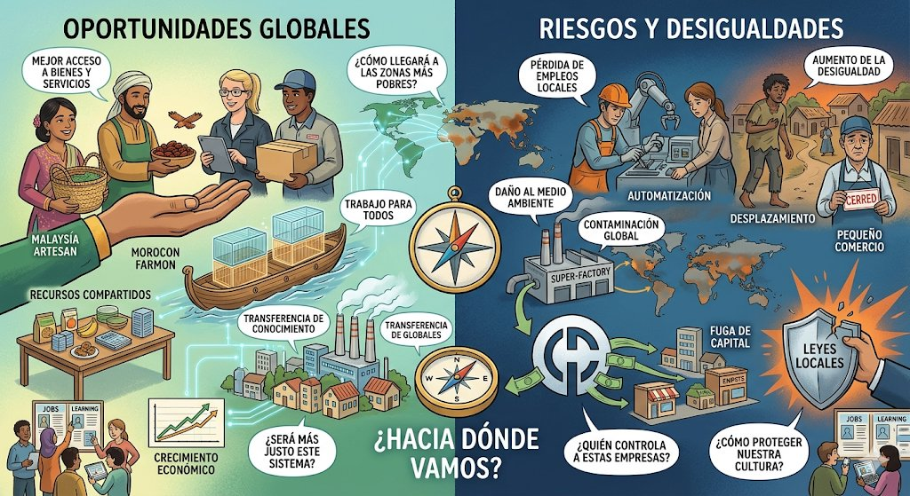

Texto

Imagen creada a través de Google Gemini IA para Regina Molina Arrebola
🌍 UNA ECONOMÍA SIN FRONTERAS
Rutina de pensamiento: Veo – Pienso – Me pregunto
👀 VEO
Observa atentamente la imagen y responde:
¿Qué elementos aparecen? (transportes, productos, personas, países…)
¿De dónde crees que vienen esos productos?
¿Qué relación tienen entre sí?
💭 PIENSO
Ahora reflexiona:
Creo que esta imagen representa…
Pienso que la economía funciona así porque…
Esto puede afectar a mi vida en cosas como…
❓ ME PREGUNTO
Hazte preguntas:
¿Quién fabrica los productos que usamos cada día?
¿Por qué algunos productos son más baratos que otros?
¿Cómo influye la economía global en mi ciudad o en mi futuro?
🎥 Ahora vamos a descubrirlo…
La actividad económica explicada de forma sencilla
💡 Este vídeo explica de forma clara qué es la actividad económica (producción, distribución y consumo), base para entender cómo funciona una economía global (youtube.com).
Si quieres, puedo transformarte esto directamente en diapositivas listas para Canva o PowerPoint con diseño visual atractivo para el tribunal.